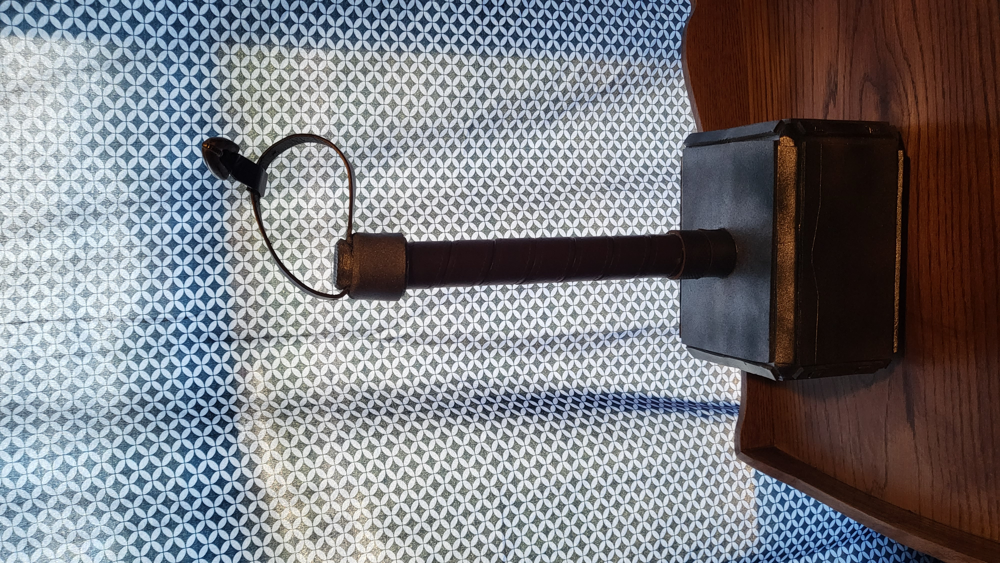

The head of the hammer is made out of two foam cubes glued together (I think the actual use for them is to help you stretch). The hilt is a wooden dowel wrapped in a belt that I got from Goodwill (pro tip: used belts from thrift stores are super cheap, $1–$3, and are great for any time you need a leather look). When I was making this, I had not yet gotten a belt sander, so in order to achieve the angled edges, my grandfather and I used his table saw to achieve the look. In the future, I may make the Mjöllnir used by Thor in the God of War games.
